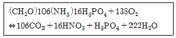
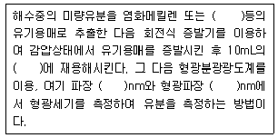
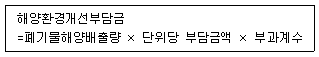

해양환경기사 (2009-05-10 기출문제)
1과목: 해양학개론
1. 해양의 표면염분 분표에 가장 큰 영향을 주는 것은?
- 증발-강수량의 차
- 바람분포
- 수온분포
- 심층해류
(정답률: 87%)

2. 고기압 지역에 나타나는 현상으로 맞는 것은?
- 바람은 북반구에서 반시계 방향으로 불어 들어온다.
- 상층부에 하강기류가 발생한다.
- 구름이 생성되고 비가 온다.
- 지표면에서는 공기가 수렴한다.
(정답률: 68%)
3. 해빈 물질의 특성과 거리가 먼 것은?
- 분급이 양호하다.
- 원마도는 둥근 상태이다.
- 대부분 진흙으로 구성된다.
- 연흔이 출현한다.
(정답률: 72%)
4. 대기와 해양간의 탄소 교환에 중요한 역할을 하는 CO2의 분압과 해수의 pH에 관련된 내용이 옳게 설명된 것은?
- 해양보다 대기중의 CO2 분압이 높으면 CO2는 해양으로부터 대기로 공급된다.
- 해수의 pH가 감소하면 CO2는 해양으로부터 대기로 공급된다.
- 해양의 기초생산이 활발하면 CO2는 해양으로부터 대기로 공급된다.
- 기초생산이 적고 pH가 적은 저위도 해역은 CO2가 대기로부터 해양으로 공급된다.
(정답률: 57%)
5. Ekman의 취송류이론에서 상부마찰심도의 해류는 해표면해류의 몇 배로 나타나는가?
- e
- e -1/π
- e -1
- e -π
(정답률: 66%)
6. 망간단괴 성분 중 경제적인 가치가 없는 것은?
- 니켈
- 코발트
- 망간
- 철
(정답률: 70%)
7. 용승(Upwelling) 해역에 대한 설명 중 틀린 것은?
- 저층의 물이 표층으로 올라온다.
- 해안선이 남북방향으로 놓인 곳에서는 용승이 있으나 동서방향으로 놓인 곳에서는 없다.
- 주변해역보다 표면 수온이 낮다.
- 영양염이 풍부하여 생물활동이 왕성하다.
(정답률: 75%)
8. 다음 중 지구 내부의 열을 공급하는 가장 주된 작용은?
- 방사성 물질의 붕괴
- 조석 작용
- 태양열
- 맨틀 대류
(정답률: 58%)
9. 열점(Hot Spot)과 관계가 가장 깊은 것은?
- 솔로몬 제도
- 하와이 제도
- 얄류샨 열도
- 파푸아뉴우기니아
(정답률: 79%)
10. 대양에서 영구수온약층(permanent thermocline)이 가장 깊은 수심에서 나타나는 해역은?
- 적도부근
- 위도 20° 부근
- 위도 40° 부근
- 극지방
(정답률: 68%)
11. 파랑이 심해에서 전파될 때 파의 속도는?
- 파장에만 관계
- 파장과 수심 모두 관계
- 수심에만 관계
- 파장과 수심 모두 무관
(정답률: 66%)
12. 기조력의 크기와 달까지의 거리와의 관계가 옳은 것은?
- 기조력은 달까지의 거리에 반비례
- 기조력은 달까지의 거리의 제곱에 반비례
- 기조력은 달까지의 거리의 3승에 반비례
- 기조력은 달까지의 거리의 4승에 반비례
(정답률: 70%)
13. 해양판과 해양판이 수렴하는 수렴경계면에서 나타나는 대표적인 해저지형(장소)은?
- 동태평양산맥
- 알류산 열도
- 하와이 열도
- 동아프리카 열곡대
(정답률: 50%)
14. 밀도류에 대한 설명 중 옳은 것은?
- 해수의 용존산소와 깊은 관계가 있다.
- 밀도차를 없애기 위해 생기는 해수의 유동이다.
- 바람의 방향과 일치한다.
- 원인으로는 태양의 인력이 있다.
(정답률: 83%)
15. 심해저 망간단괴를 상대적으로 많이 채취할 수 있는 장점은 있으나 주변의 퇴적물을 채취하지 못하는 단점을 가진 방법은?
- Grab식
- Dredge식
- Piston식
- Siphon식
(정답률: 75%)
16. 미타마타병과 이타이 이타이병의 원인이 되는 해양오염 물질은 각각 무엇인가?
- 납, 구리
- 수은, 카드뮴
- 구리, 수은
- 납, 카드뮴
(정답률: 84%)
17. 해양과 대기의 상호작용을 설명한 내용 중 틀린 것은?
- 바닷물의 비열이 높기 때문에 바닷물 1g을 1℃ 높이는데 1cal 이상이 필요하다.
- 해양과 대기의 가열이나 냉각이 있음에도 평균적인 열수지의 균형을 이루고 있다.
- 해류와 대기의 날씨는 물과 공기의 불균등한 태양 가열에 의한 결과이다.
- 해류는 열대에서 극지방으로 열을 운반한다.
(정답률: 68%)
18. 해수 중 인산염 농도변화를 설명한 내용 중 잘못된 것은?
- 겨울철에 높은 농도를 보인다.
- 봄철에 낮은 농도를 보인다.
- 하루 중 해뜨기 직전에 최소 농도를 보인다.
- 식물의 활동이 왕성한 시간에 최소 농도를 보인다.
(정답률: 73%)
19. 엘니뇨(El Nino) 현상은 어디에서 주로 일어나는가?
- 동남아시아 연안
- 적도태평양의 동부
- 북서아메리카 연안
- 남동태평양 전역
(정답률: 78%)
20. 염분 측정에 이용되는 대표적인 물리적 성질은?
- 지구자기
- 빛의 굴절
- 산성도
- 전기전도도
(정답률: 82%)
2과목: 해양생태학
21. 심해 오아시스(Hydrothermal vent) 생태계의 특징이 아닌 것은?
- 화학합성에 의한 기초생산이 크다.
- vent의 해수는 H2S 함량이 매우 높다.
- 수온이 주변 심해저보다 낮다.
- 생물종 수가 주변 심해저보다 많다.
(정답률: 72%)
22. 간극생물의 생태적 특징을 바르게 표현한 것은?
- 연안조간대와 조하대에만 서식한다.
- 저질표면보다 깊은 곳에 서식밀도가 더 높다.
- 펄입자가 가늘수록 서식밀도가 높아진다.
- 환원환경에도 높은 밀도로 서식한다.
(정답률: 48%)
23. 해양에 유출된 유류가 해수 중에서 진행하는 과정이 아닌 것은?
- 확산
- 증발과 용해
- 여과와 투석
- 유화와 침전
(정답률: 82%)
24. 우리나라의 암반 조간대에서 조위에 따라 출현하는 종들을 각각 조간대 상부, 중부, 하부로 구분할 때 옳게 나열한 것은?
- 총알고둥 – 해면동물 – 대수리
- 좁쌀무늬총알고둥 – 담치류 – 불가사리류
- 좁쌀무늬총알고둥 – 조무래기따개비 – 총알고둥
- 총알고둥 – 말미잘류 – 군부류
(정답률: 82%)
25. 아가미로 여과 섭이를 하는 것은?
- 담치류
- 복족류
- 요각류
- 상어류
(정답률: 69%)
26. 광합성 색소로 피코빌린(phycobilin)을 함유하는 것은?
- 홍조식물문
- 갈조식물문
- 녹조식물문
- 황적조식물문
(정답률: 67%)
27. 해양에서 항온동물로 출현하는 종류는?
- 연체류
- 바다거북류
- 열대어류
- 돌고래류
(정답률: 71%)
28. 해중 식물 군락이 생태적으로 매우 중요한 이유와 가장 거리가 먼 것은?
- 기초생산력이 증대된다.
- 작은 동물이나 부착생물의 서식장소를 제공한다.
- 질소, 인 등의 영양염류를 흡수한다.
- 회유성 어류의 서식처가 된다.
(정답률: 74%)
29. 전 세계적으로 일반적인 천해 생태계에서의 중형저서생물의 평균 서식밀도와 현존량을 McIntyre(1969)나 Coull and Bell(1979)의 연구 결과에 의해 구할 때 옳은 것은?
- 106개체 정도/m2, 1 ~ 5 g/m2
- 103개체 정도/m2, 10 ~ 100 g/m2
- 106개체 정도/m2, 10 ~ 100 g/m2
- 103개체 정도/m2, 1 ~ 10 g/m2
(정답률: 60%)
30. 기초생산의 보상점에서 일어나는 현상은?
- 총호흡량은 총생산량보다 크다.
- 총호흡량과 총생산량은 같다.
- 총호흡량은 총생산량보다 작다.
- 총호흡량과 총소비량이 같다.
(정답률: 80%)
31. 다음 중 기초생산이 가장 높은 생태계는?
- 하구
- 대륙붕대
- 외양
- 적도해양
(정답률: 81%)
32. 적조를 일으키는 와편모조류에 속하는 것은?
- Skeletonema속
- Chaetoceros속
- Nitzschia속
- Gymnodinium속
(정답률: 86%)
33. 수력학적인 조건이 약한 곳에서의 조하대 연성 저질 저서동물 군집과 관련된 특성을 옳게 설명한 것은?
- 현탁물식자가 우세하다.
- 퇴적물식자가 우세하다.
- 퇴적물은 펄의 함량이 낮다.
- 퇴적물 내의 유기물 함량이 낮다.
(정답률: 76%)
34. K-선택환경을 가지는 종간경쟁이 강한 해양생물그룹의 특징이 아닌 것은?
- 성장이 빠르다.
- 생식이 느리다.
- 몸체가 크다.
- 여러번의 생식을 한다.
(정답률: 69%)
35. 하구역의 생태적 특징을 기술한 내용 중 맞지 않은 것은?
- 유기쇄설입자가 어류나 대형저서동물의 먹이가 된다.
- 생활하수가 유입될 경우 유기오염이 될 수 있다.
- 염분농도에 의해 분포가 결정된다.
- 하구역 저서동물은 하구역내에서 생활사를 완결한다.
(정답률: 83%)
36. 조간대 생물의 적응 전략의 설명으로 틀린 것은?
- 건조에 적응하기 위해 서식지를 옮긴다.
- 주로 물에 잠겼을 때 호흡과 섭식을 한다.
- 파도에 견디기 위하여 족사를 내고 확장된 발을 갖고 있다.
- 온도변화에 견디기 위하여 몸을 크게 하거나 패각의 조각을 단순하게 하여 열을 발산시킨다.
(정답률: 67%)
37. 다음 중 부영양화 현상의 가장 중요한 원인은?
- 수온 상승
- 염분도 하강
- 생태계 변화
- 영양염류의 급증가
(정답률: 76%)
38. 폐쇄적인 만에서 양식생물의 배설물 등이 저층에 쌓여 나타나는 주된 현상은?
- 생산량 증가
- 영양염 공급으로 인한 생물량 증가
- 종 다양도 증가
- 유기물 분해로 인한 빈산소대 증가
(정답률: 86%)
39. 해양저서동물에 의한 생물교반(bioturbation) 현상의 설명 중 틀린 것은?
- 생물교반이란 주로 연성기질에 있어서 저서동물의 활동에 의해 퇴적물의 수직단면의 구조가 바뀌는 현상이다.
- 생물교반은 저서동물에 의한 서식장소나 은신처로서의 땅굴파기, 먹이섭취를 위한 배회, 포복 및 굴착 활동, 배설물의 배출 등에 의해 이루어진다.
- 해양저서생물은 퇴적물 안정자(sediment stabilizer) 로서의 역할로 인하여 퇴적물의 수직구조나 화학적 특성을 변화시키기가 어렵다.
- 해저 퇴적물의 수직 단면을 보면 최상부에는 황갈색의 산화층, 그 밑에는 회색층인 산화-환원 전위 불연속층, 하부에는 흑색의 산소가 없는 환원층으로 나타나는 것이 일반적이다.
(정답률: 76%)
40. 일반적으로 강의 하구역(estuary)에서 우점하는 해조류는?
- 녹조류
- 갈조류
- 홍조류
- 황색편모류
(정답률: 80%)
3과목: 해양계측학
41. 해양 퇴적물에 관한 내용 중 틀린 것은?
- 천해성 퇴적물은 유기 기원인 것이 바다로 운반되어 해류의 작용을 받아 얕은 해저에 퇴적된 것이다.
- 심해성 퇴적물은 대륙주변부 또는 해류의 직접적인 영향을 받지 않는 퇴적물이다.
- 대부분의 심해 퇴적물은 생물기원 퇴적물이다.
- 천해성 퇴적물은 생물기원 물질의 양이 많이 함유되어 있고, 조립질이라는 점이 특징적이다.
(정답률: 46%)
42. 1983년 1월 1일~1월 30일 간 관측된 지세포의 평균 해면이 82.5 cm, 인근 표준항 부산의 평균 해면이 62.0 cm, 그리고 부산의 연 평균 해면이 64.0 cm 였다면 지세포의 보정된 연 평균해면은?
- 84.5cm
- 80.5cm
- 83.5cm
- 81.5cm
(정답률: 74%)
43. 탄소나 인을 섭취한 생물 생체 중의 반응이 아래와 같을 때 호흡률(Respiratory quotient)은 약 얼마인가?

- 1.00
- 0.97
- 0.86
- 0.77
(정답률: 52%)
44. 북대서양과 북태평양의 용존산소와 질산염의 분포를 비교할 때 옳은 것은?
- 용존산소는 북대서양이 북태평양보다 용존량이 낮다.
- 질산염 분포는 북대서양이 북태평양보다 높다.
- 용존산소와 질산염 분표량은 북대서양이나 북태평양이 동일하다.
- 용존산소량은 북대서양이, 질산염 분포량은 북태평양이 각각 높다.
(정답률: 66%)
45. 수심이 깊은 심해에 유속계를 계류한 후, 수거할 때 필요한 기기장치는?
- CTD system
- Sonar system
- Echo sounder
- Acoustic release system
(정답률: 74%)
46. 다음 중 해수중 잔류시간(residence time)이 가장 긴 원소는?
- Al
- Na
- Mn
- Fe
(정답률: 81%)
47. 원격탐사에 현재 이용되지 않는 전자파는?
- 가시광선
- 열적외선
- Microwave
- X-선
(정답률: 68%)
48. 루골액(Lugol solution)은 어떤 생물을 고정하는데 주로 사용되는가?
- 해양미생물
- 어류
- 식물플랑크톤
- 저서동물
(정답률: 72%)
49. 탄성파 탐사의 스파커(Sparkarray system)와 관계없는 것은?
- Capacitor Bank
- Spark Elements
- Power Supply
- Compressor
(정답률: 67%)
50. 플랑크톤 채집 망목의 면적을 100m2, 망입구의 면적을 20m2이라고 할 때 개구비는?
- 0.2
- 3
- 5
- 500
(정답률: 70%)
51. 오일러법(Eulerian Method)에 속하는 것은?
- 고정된 점에서 해류를 시간에 따라서 측정한다.
- 부표를 표류시켜 그 위치를 시간에 따라서 측정한다.
- 염료를 바다에 풀어 측정한다.
- 배가 해류에 의해 밀린 모양을 측정한다.
(정답률: 70%)
52. 현탁성물질을 여과하는데 통상 쓰는 Millipore filer HA형의 공경은 약 얼마인가?
- 0.45μm
- 0.65μm
- 0.30μm
- 1μm
(정답률: 72%)
53. 1972년 이래 미국 NASA에서 순차적으로 발사한 5개의 NOAA 인공위성은 주로 무엇을 측정하기 위함인가?
- 풍향, 풍속
- 해수 온도
- 해수 색상
- 해안 지형
(정답률: 77%)
54. 국제표준수심을 적합하게 나열한 것은?
- 0m, 5m, 10m, 20m, 30m, 50m
- 0m, 10m, 15m, 20m, 30m, 50m
- 0m, 10m, 20m, 35m, 50m, 70m
- 0m, 10m, 20m, 30m, 50m, 75m
(정답률: 84%)
55. 해양의 지질구조를 결정하는 해저탐사 방법이 아닌 것은?
- 탄성파 측정
- 중력측정
- 지자기 측정
- 수심측정
(정답률: 48%)
56. 조석관측 방법으로 이용되지 않는 것은?
- 부표식
- 압력식
- 표척식
- 지자기식
(정답률: 80%)
57. 원격탐사에 이용되는 인공위성에 관측 장비 이외에 기본적으로 탑재되어야 할 장치와 갖아 거리가 먼 것은?
- 음향 송,수신장치
- 야간에도 작동할 수 있게 하는 전력 공급장치
- 가열을 방지하는 열 제어장치
- 위성의 자세 제어장치
(정답률: 80%)
58. 바다에서 배의 위치를 알기 위한 항법이나 방법에 대한 설명이 틀린 것은?
- Terrestrial Navigation - 세 가지 물표의 방향으로 배의 위치를 정한다(이때 콤파사는 정확해야함).
- Astronomical Navigation - 별, 달, 해의 위치와 고도를 참고로 한다.
- Radio Direction Finding - 라디오는 어떤 방향에 따라 소리가 잘나고 안나고 하는 것으로 방향을 추정한다.
- Loran(Long range navigation) - 위상차의 원리를 이용한다.
(정답률: 59%)
59. 가장 깊은 곳까지의 시료를 안정하게 그대로 채취할 수 있는 저질채취기는?
- Dredge
- Grab Sampler
- Piston Core
- Spade Core
(정답률: 74%)
60. 세계기상기구(WMO)에서 지정한 파랑관측 코드는 몇 등급인가?
- 5
- 10
- 15
- 20
(정답률: 76%)
4과목: 해수의 수질분석
61. 유기인 농양성분 분석결과 보고시 포함시키지 않아도 되는 항목은?
- 검정관계식
- 검출한계
- 표준용액의 농도
- 상관계수(r2)
(정답률: 65%)
62. 해수시료를 채취하여 분석하고자 할 때, 폴리에틸렌 재질의 시료 용기를 사용할 수 없는 측정항목들로만 짝지어진 것은?
- 페놀류, 유기인, PCB
- 불소, 대장균군, 총인
- 클로로필 a, 유기인, 불소
- 인산염인, 총질소, 총인
(정답률: 67%)
63. Microtox bioassay 중 염수추출법에 대한 내용이 아닌 것은?
- 염화메틸렌을 추출용매로 이용한다.
- 전처리 과정이 유기용매 추출법보다 단순하다.
- 퇴적물 내 공극수와 무기용매에 의해 추출되는 성분을 이용한다.
- 퇴적물 내 용존태 및 수용성으로 추출되는 독성물질을 검색한다(주로 이온성 금속류).
(정답률: 59%)
64. 해수의 인산인 분석과 관계가 없는 시약은?
- 옥살산용액
- 몰레브덴산암모늄용액
- 아스코르빈산용액
- 황산용액
(정답률: 73%)
65. pH 환충용액과 관련된 내용이 틀린 것은?
- 소량의 약산이나 약알칼리를 가하면 용액의 pH는 변하지 않는다.
- 해수의 pH는 중탄산이온의 완충작용에 의해 대략 8.1 내외를 유지하고 있다.
- 짝산-짝염기(conjugate acid-base)의 화학적 성질때문에 완충효과를 나타낸다.
- 완충능력이 매우 커서 과량의 산이나 알칼리를 가하여도 용액의 pH는 변하지 않는다.
(정답률: 77%)
66. 순수한 물 500mL에 HCl(비중 1.18) 100mL를 혼합하였을 때, 이 용액의 염산농도는 약 몇 %(W/W)인가?
- 16.6%
- 19.1%
- 20.0%
- 23.0%
(정답률: 61%)
67. 퇴적물의 화학적산소요구량(COD) 측정에 관한 사항 중 옳은 것은?
- 퇴적물 중의 총유기물 양을 나타내는 지표이다.
- 퇴적물 중의 유기물질 중 산소를 소모하는 유기물의 양을 나타내는 지표이다.
- 퇴적물 중에 유독성 유기화합물질의 양을 나타내는 지표이다.
- 퇴적물 중에 난분해성 유기물질의 양을 나타내는 지표이다.
(정답률: 73%)
68. 해수시료 내의 아질산 질소를 실험하는 과정에서 높은 농도의 황화수소가 포함되어 간섭될 경우 취할 수 있는 방법은?
- 질소기체로 황화수소를 탈기시킨 다음 분석한다.
- 시료에 0.1N 질소용액을 첨가하여 시료의 pH를 2로 조절한다.
- 원심분리 후 상등액을 취하여 분석한다.
- 1mL의 초산아연용액을 시료에 즉시 첨가한다.
(정답률: 33%)
69. 대장균군 시험방법 중 막여과 시험방법에 필요한 시험 기기가 아닌 것은? (단, 보기의 것은 모두 멸균된 것으로 간주한다.)
- 뷰렛
- 메스실린더
- 플라스틱 페트리디쉬
- 피펫
(정답률: 53%)
70. 용매추출유분의 측정원리에 대한 아래 내용 중 괄호 안에 들어갈 적합한 말을 순서대로 적은 것은?

- 사염화탄소, 클로로포름, 210, 260
- 사염화탄소, 노말헥산, 310, 360
- 클로로포름, 노말에이코산, 210, 260
- 클로로포름, 노말헥산, 310, 360
(정답률: 64%)
71. 자외선/가시선 분광법에서 사용하는 흡수셀에 대한 설명 중 틀린 것은?
- 플라스틱제는 근자외부 파장범위에서 사용된다.
- 유리제는 가시부 파장범위에서 사용된다.
- 석영제는 자외부 파장범위에서 사용된다.
- 유리제는 근적외부 파장범위에서 사용된다.
(정답률: 45%)
72. 해수의 COD 측정 시 알칼리성 과망간산칼륨법을 사용하는 이유는?
- 알칼리성에서 과망간산칼륨의 산화력이 더 크기 때문에
- 산성에서는 염화이온을 산화시키는데 과망간산칼륨이 소모되기 때문에
- 칼슘, 마그네슘의 침전을 방지하기 위하여
- 해수는 약알칼리성이기 때문에
(정답률: 72%)
73. 해저퇴적물의 함수율 측정 시 “항량으로 될 때까지 건조한다”라 함은 무엇을 의미하는가?
- 같은 조건에서 2시간 더 건조할 때 전후의 무게차가 g당 0.1mg 이하 일 때
- 같은 조건에서 1시간 더 건조할 때 전후의 무게차가 거의 없을 때
- 같은 조건에서 1시간 더 건조할 때 전후의 무게차가 g당 0.3mg 이하 일 때
- 같은 조건에서 1시간 더 건조할 때 전후의 무게차가 g당 0.1mg 이하 일 때
(정답률: 65%)
74. 퇴적물 중의 폴리클로리네이티드비페닐(PCBs)을 기체크로마토그래프에서 검출할 경우 사용되는 검출기는?
- 전자포획 검출기(ECD)
- 불꽃이온화 검출기(FID)
- 염광광도형 검출기(FPD)
- 열전도도 검출기(TCD)
(정답률: 76%)
75. TOC 측정시 표준용액은 언제 준비하는 것이 옳은가?
- 분석 전일
- 분석 당일
- 한 달 이전
- 석 달 이내
(정답률: 74%)
76. 10-7M HCl 용액의 pH는?
- 6.5
- 6.7
- 6.9
- 7.0
(정답률: 52%)
77. 입자 측정 방법에 대한 내용이 틀린 것은?
- 자갈 이상의 크기를 가지는 퇴적물 입자는 버어니어캘리퍼스를 이용하여 그 장축과 단축을 측정한다.
- 모래크기의 입자는 건식체질로 입자가 통과하는 가장 작은 체의 간격을 입자의 크기로 하여 측정한다.
- 모래와 뻘은 습식체질로 측정한다.
- 뷰렛법은 입자의 침강속도가 입자크기에 비례한다는 이론에 근거하여 퇴적물 입자를 측정하는 방법이다.
(정답률: 45%)
78. 해수 시료 2L를 여과해서 여과지를 건조시킨 다음 무게를 측정하였더니 0.1626g이었다. 여과지의 무게를 0.1487g이라고 하면 부유물질 농도는?
- 5.45 mg/L
- 6.95 mg/L
- 10.90 mg/L
- 13.90 mg/L
(정답률: 69%)
79. 알킬수은 분석을 위한 가스크로마토그래프의 운반가스로 사용되는 물질은?
- 산소
- 염소
- 질소
- 아세틸렌
(정답률: 52%)
80. 해양의 표층퇴적물 시료채취기가 아닌것은?
- 반빈(Van Veen)형 채취기
- 스미스-맥킨타이어(Smith-Mcintyre)형 채취기
- 반돈(Van Dorn)형 채취기
- 라퐁드(La Fond)형 채취기
(정답률: 67%)
5과목: 해양관련법규
81. 해양오염방지협약상 선박 항해중의 폐기물 처분에 관한 설명으로 틀린 것은?
- 특별해역 외의 지역에서 합성로우프는 육지로부터 25해리 이상 떨어져 처분한다.
- 특별해역 외의 지역에서 부유성 던니지는 육지로부터 25해리 이상 떨어져 처분한다.
- 특별해역 외의 지역에서 음식찌꺼기는 육지로부터 12해리 이상 떨어져 처분한다.
- 특별해역 외의 지역에서 유리는 육지로부터 12해리 이상 떨어져 처분한다.
(정답률: 72%)
82. 해양환경관리법상 오염물질의 유입 또는 퇴적 등으로 인한 해양오염을 방지하고 해양환경을 개선하기 위해 해역관리청이 할 수 있는 해양환경개선조치가 아닌 것은?
- 오염물질 유입방지시설의 설치
- 오염물질의 수거 및 처리
- 오염된 퇴적물의 수거
- 오염물질 배출부과금 징수
(정답률: 62%)
83. 해양오염방지협약상 해양학, 생태학, 해상교통의 특수성 등의 이유로 폐기물에 의한 해양 오염 방지를 위하여 특별한 강제조치의 채택이 요구되는 특별해역에 포함되지 않는 것은?
- 발틱해
- 북해
- 베링해
- 카리브해
(정답률: 80%)
84. 해양환경관리법상 기름의 해양유출사고에 대비하여 방제선 또는 방제장비를 배치 또는 설치하여야 하는 선박 또는 해양시설이 아닌 것은?
- 총톤수 500톤인 유조선
- 유조선을 제외한 총톤수 1만톤인 선박
- 신고된 해양시설로서 저장용량 5천 킬로리터인 기름 저장시설
- 신고된 해양시설로서 저장용량 1만 킬로리터인 기름 저장시설
(정답률: 50%)
85. 어장관리법상 어장휴식에 관한 설명으로 틀린 것은?
- 시장, 군수, 구청장은 어업면허를 받은 어장이 있는 어장관리특별해역에 대하여 어장휴식에 관한 계획을 수립할 수 있다.
- 시장, 군수, 구청장이 어장휴식계획을 수립하려면 그 해역안에서 어업면허를 받은 자와 미리 그 시기, 기간, 방법 등에 관하여 협의하여야 한다.
- 시장, 군수, 구청장은 어업면허 유효기간 중에 어장휴식을 실시하지 아니한 어장에 대하여는 그 어업면허 유효기간이 지난 날부터 1년 동안 어장휴식을 실시한 후 새로운 어업면허를 하여야 한다.
- 시장, 군수, 구청장은 어장휴식계획에 따라 어장휴식을 실시하는 어장의 휴식기간 중에 어장정화, 정비를 우선적으로 실시하여야 한다.
(정답률: 61%)
86. 유류오염손해배상 보장법상 국제기금에 유류오염손해금액을 청구할 수 있는 자는?
- 선박소유자
- 보험자
- 피해자
- 가해자
(정답률: 75%)
87. 유류오염손해배상보장법의 목적에 포함되지 않는 것은?
- 선박소유자의 책임 명확화
- 유류오염손해의 배상제도 확립
- 유류운송의 건전한 발전도모
- 해양환경의 적절한 보존과 관리
(정답률: 46%)
88. 해양환경관리법령상 특별관리해역이 아닌 것은?
- 울산연안
- 광양만
- 시화호, 인천연안
- 함평만
(정답률: 73%)
89. 1973년 선박으로부터의 해양오염방지를 위한 국제협약에 관한 1978년 의정서는 발표일로부터 몇 년이 경과하면 당사국에서 탈퇴할 수 있는가?
- 3년
- 4년
- 5년
- 10년
(정답률: 69%)
90. 해양생태계의 보전 및 관리에 관한 법령상 회유성 해양동물에 해당되지 않는 것은?
- 연어
- 뱀장어
- 고등어
- 동남참게
(정답률: 78%)
91. 유류오염손해배상 보장법상 유류오염손해배상보장 계약에 관한 설명으로 옳은 것은?
- 대한민국 선박으로 200톤 이상의 산적유류를 화물로서 운송하는 선박소유자는 계약체결 의무가 있다.
- 외국 선박으로 300톤 이하의 산적유류를 화물로서 적재하고 국내항에 입, 출항하는 선박소유자는 계약체결 의무가 없다.
- 선박소유자의 손해배상책임이 발생한 때에는 선박소유자의 고의에 의한 경우에도 피해자는 보험자 등에 대하여 직접 지급을 청구할 수 있다.
- 유류오염손해배상 보장계약의 증명서를 발급받은 선박에 대한 보장계약증명서의 선내 비치 의무는 없다.
(정답률: 55%)
92. 유류오염손해배상 보장법상 유류오염손해가 발생한 경우 사고 당시의 선박소유자가 그 손해를 배상할 책임이 있는 경우는?
- 전장, 내란, 폭동 또는 불가항력으로 인한 천재, 지변에 의하여 발생한 사고
- 선박소유자 및 그 사용인이 아닌 제3자의 고의만으로 인하여 발생한 사고
- 국가 및 공공단체의 항로표지 또는 항행보조시설의 관리의 하자만으로 인하여 발생한 사고
- 대한민국 국민이 나용선한 외국적 선박으로 인하여 손해가 발생한 사고
(정답률: 60%)
93. 해양환경관리법상 해양환경관리업의 등록을 할 수 있는 자는?
- 금치산자 및 한정치산자
- 하선징계를 받은 선장
- 파산선고를 받은 자로서 복권되지 아니한자
- 해양환경관리업의 등록이 취소된 후 1년이 경과되지 아니한 자
(정답률: 72%)
94. 해양환경관리법상 검사대상선박의 소유자가 해양오염 방지 설비 등을 교체, 개조 또는 수리를 하고자 하는 때에 받아야 하는 검사는?
- 정기검사
- 중간검사
- 임시검사
- 재검사
(정답률: 73%)
95. 해양환경관리법령상 방제대책본부의 구성, 운영에 관한 설명으로 틀린 것은?
- 방제대책본부장은 해양경찰청장이 되고, 그 구성원은 해양경찰청 소속 공무원과 관계 기관의 장이 파견한 자로 구성한다.
- 재난적 대형사고일 경우에는 방제대책본부장이 국무총리로 격상된다.
- 방제대책본부장은 관계 기관의 장에게 방제대책본부에 근무할 자의 파견과 방제작업에 필요한 인력 및 장비 등의 지원을 요청할 수 있다.
- 방제대책본부장은 해양환경 보전과 과학적인 방제를 위한 기술지원 및 자문을 위하여 관계 전문가로 구성된 방제기술지원협의회를 구성, 운영할 수 있다.
(정답률: 69%)
96. 해양환경관리법령상 국토해양부장관 소속 해양환경감시원의 직무가 아닌 것은?
- 해양공간으로 유입되거나 해양에 배출되는 폐기물의 감시
- 폐기물해양수거업자 및 퇴적오염물질수거업자의 사업 시설에 대한 지도, 검사
- 환경관리해역에서의 해양환경 개선을 위한 오염원 조사 활동
- 해양시설오염물질기록부, 해양시설오염비상계획서 및 해양오염방지관리인과 해양시설에서의 오염물질 배출감시 및 해양오염예방을 위한 지도, 점검 업무
(정답률: 37%)
97. 해양환경관리법령상 해양환경개선부담금의 산정에 관한 설명으로 틀린 것은?

- 폐기물해양배출량의 단위기준은 세제곱미터로 하며 세제곱미터 미만은 반올림하여 적용한다.
- 단위당 부과금액은 1,100원으로 한다.
- 부과계수는 폐기물 종류별 차등한다.
- 부과계수는 육,해상배출비용차액계수와 오염도계수의 곱으로 산출한다.
(정답률: 58%)
98. 유류오염손해배상 보장법상 연간 몇 톤을 초과하는 분담유를 수령할 경우에 국토해양부장관에게 보고하여야 하는가?
- 5만톤
- 10만톤
- 15만톤
- 20만톤
(정답률: 68%)
99. 습지보전법상 습지에 대한 조사 및 습지보전기본계획의 수립을 총괄하는 자는?
- 국토해양부장관
- 환경부장관
- 시,도지사
- 시장, 군수, 구청장
(정답률: 55%)
100. 유류오염손해배상 보장법상 제한채권자가 그 제한채권에 대해 갖는 우선특권이 적용되지 않는 것은?
- 적재유류
- 사고선박
- 사고선박의 속구(屬具)
- 수령하지 아니한 운임
(정답률: 64%)